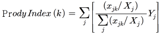
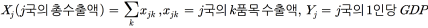
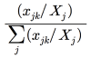

kumuka80

상품고부가가치지수(Prody Index)의 개념
- 정의
- 국제무역거래상품 중에서 부가가치 수준을 나타내는 지표로, 한 국가의 국민소득수준을 고려하여 자체 개발 및 생산에 경제성이 있는지 여부를 판단할 때 사용 가능한 지수
- 산식
- Prody Index(k) =
subject to  - 세계시장에서 어느 국가(j)의 상품(k)에 비교우위()을 가중치로 하여 1인당 GDP(Y)를 합산한 값으로
- 1인당 GDP는 생산성 및 부가가치를 대표하는 지수이므로 Prody Index는 해당 상품의 부가가치 수준을 나타냄
- 활용
- Prody Index가 높은 상품이 선진국에서 주로 생산하는 상품이며, 이는 노동비용을 상쇄할 정도로 고부가가치 상품임을 의미
- 만일 Prody Index 값이 3만 이상이면, 1인당 국민소득이 3만달러 이상인 국가에서 생산하여 수출하여도 노동비용 등을 고려할 때 경제성이 있다는 의미
- 반대로 Prody Index 값이 3만 이하인 상품은 국민소득이 3만달러 이상인 국가에서 생산하기에 경제성 측면에서 부적합하다는 의미